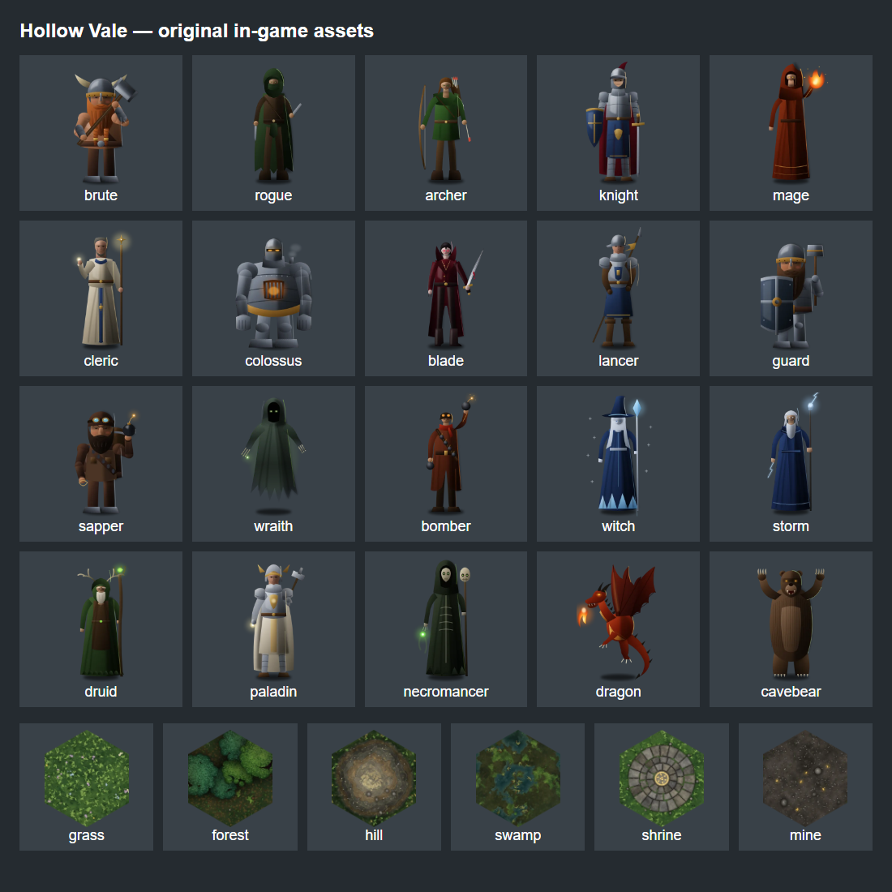
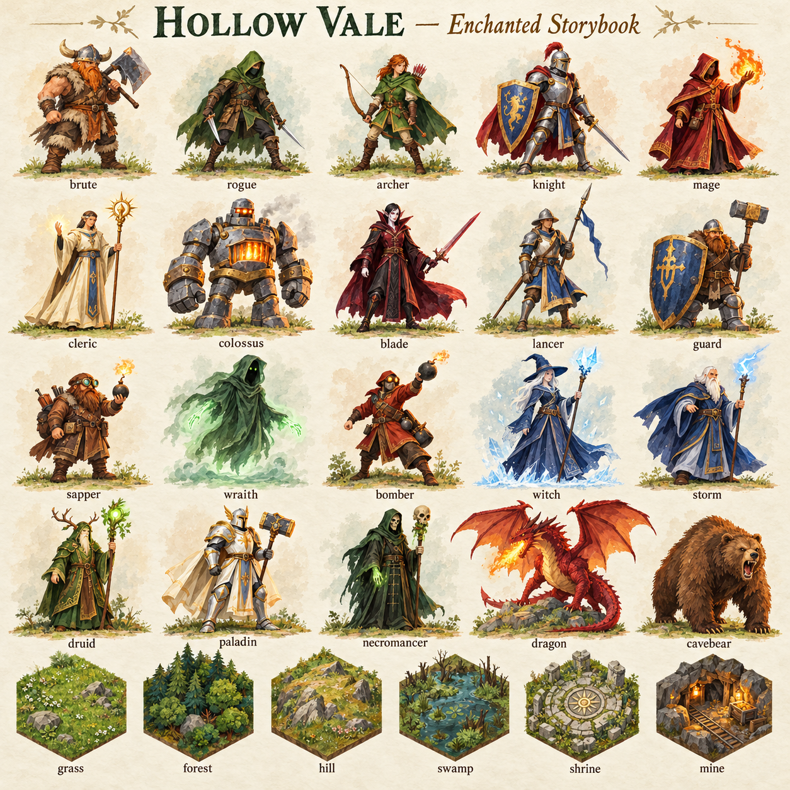
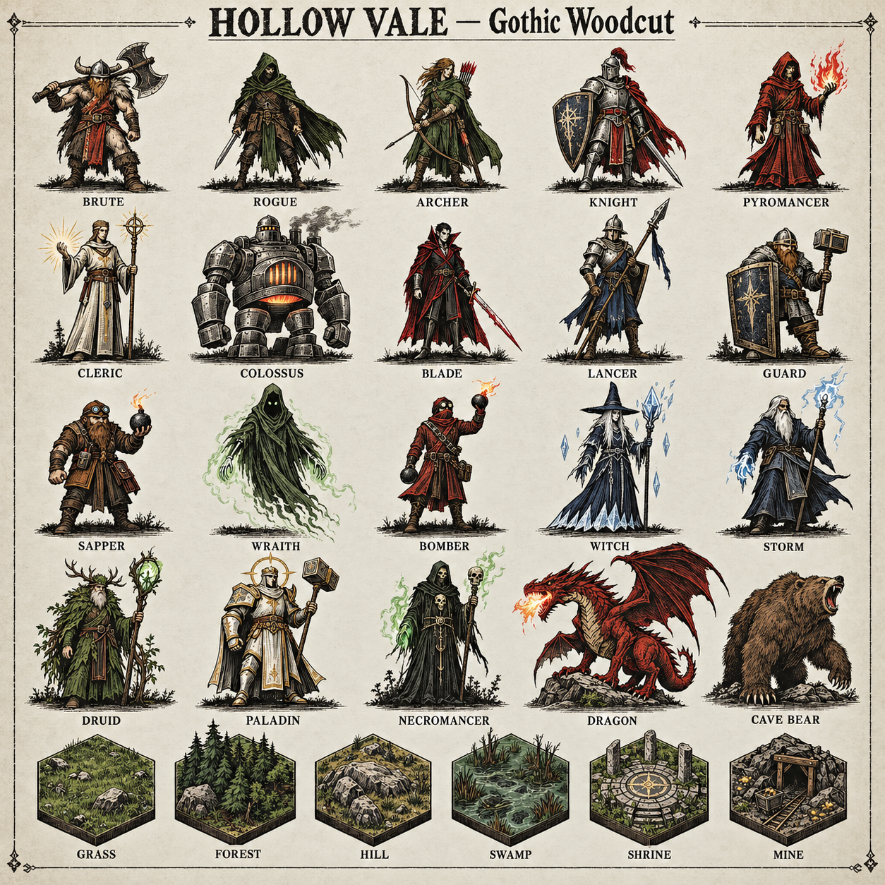
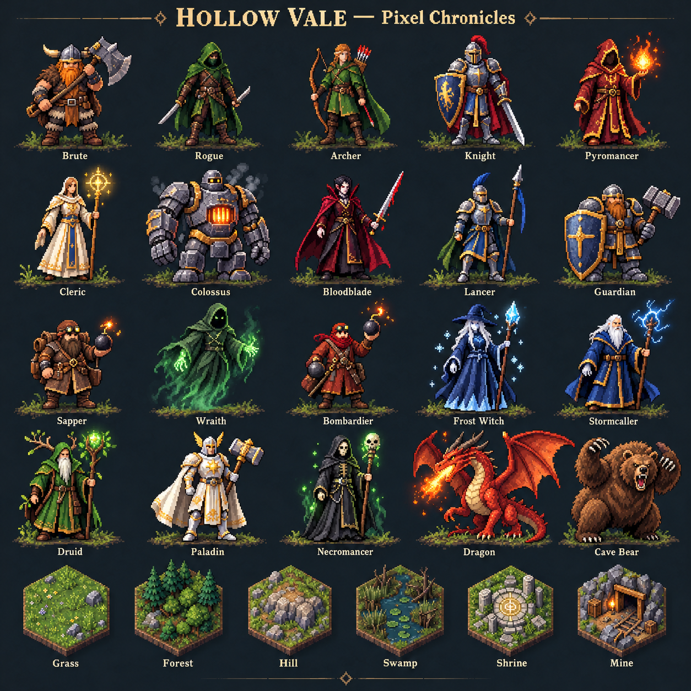
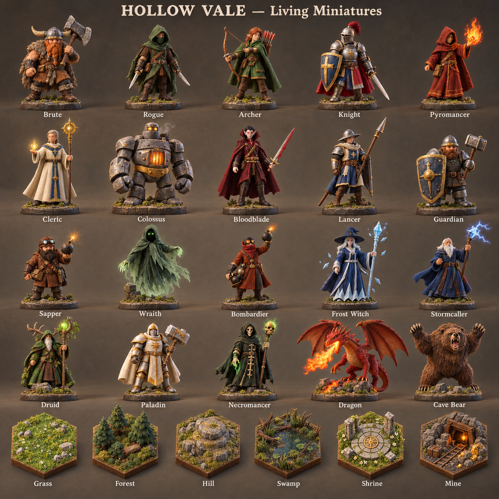
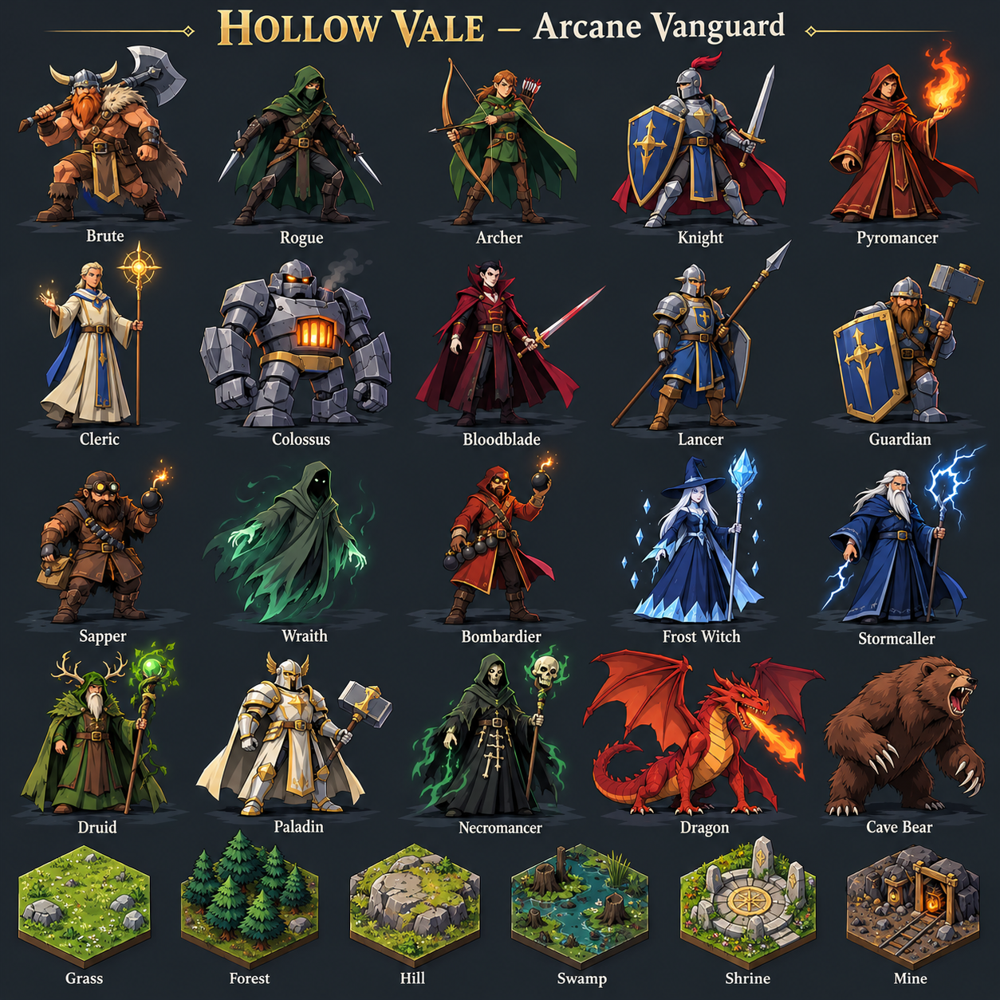

Original in-game assets
Current roster and terrain.

Same 20 units and six terrain types in every direction. Click a sheet for full size. Concept exploration only; the live game is unchanged.
Current roster and terrain.

Hand-painted gouache and watercolor storybook fantasy. Expressive heroic proportions, textured brush edges, moss green, parchment cream, warm ochre, rich burgundy. Luminous gentle magic, charming but combat-capable, no plastic or photorealism.

Dark medieval woodcut and ink engraving fantasy. Angular striking silhouettes, carved black hatching, bone ivory, charcoal, oxblood red, restrained sickly green magical accent. Ominous elegant folk-horror, highly readable. No photorealism, no generic 3D.

Premium meticulously hand-crafted 32-bit pixel-art tactics aesthetic. Crisp visible square pixel clusters, limited unified palette, strong silhouettes, dramatic controlled highlights. Moss green, navy shadows, copper, gold magic. No smooth gradients, no vector, no blurred pixels.

Tactile stop-motion clay and hand-painted tabletop miniatures. Sculpted chunky forms, tiny handmade surface imperfections, wool and hammered metal details, warm studio lighting. Moss, terracotta, cream and slate palette. Charming serious fantasy diorama pieces, readable equipment.

Bold contemporary cel-shaded fantasy tactics illustration. Dynamic angular silhouettes, confident clean ink contours, two-tone hard shadow shapes, jewel teal, violet, gold and crimson accents. Expressive faces, exaggerated readable equipment, polished hand-drawn animation look. No soft painterly rendering.

Created with the built-in image-generation tool. Generation prompts